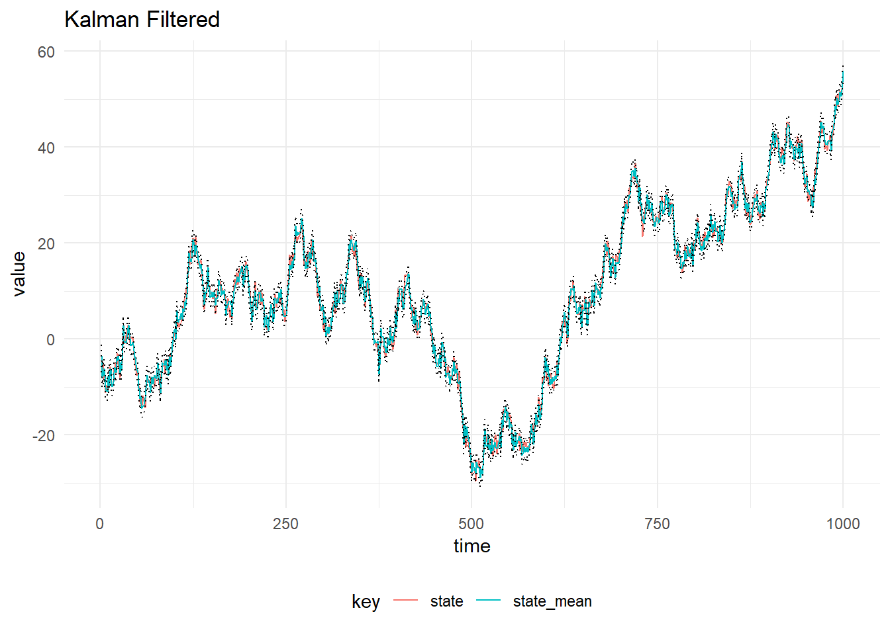
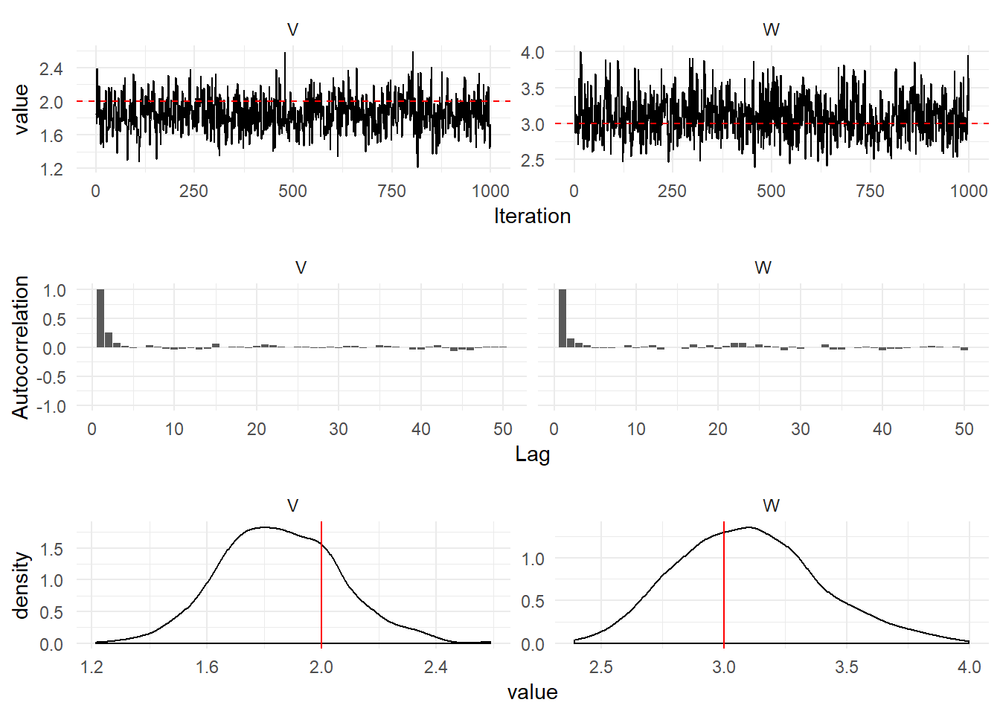

First Order DLM
Simulation
The first order model has a 1-dimensional observation at time \(t\), \(Y_t\) and a one dimensional latent state, \(X_t\). The system evolution (\(G_t\)) and observation (\(F_t\)) matrices are scalars and take the value 1, as such they are omitted from the model specification below for simplicity. The system and observation noise variances are scalars and are constant in time.
\[\begin{align} Y_t &= x_t + v_t, \quad v_t \sim \mathcal{N}(0, V), \\ X_t &= x_{t-1} + w_t, \quad w_t \sim \mathcal{N}(0, W), \\ X_0 &\sim \mathcal{N}(m_0, C_0). \end{align}\]
The code required to simulate from this model is given below:
scala> import dlm.model._
import dlm.model._
scala> import breeze.linalg.{DenseMatrix, DenseVector, diag}
import breeze.linalg.{DenseMatrix, DenseVector, diag}
scala> val mod = Dlm.polynomial(1)
mod: dlm.model.Dlm.Model = Model(<function1>,<function1>)
scala> val p = Dlm.Parameters(
| v = DenseMatrix(3.0),
| w = DenseMatrix(1.0),
| m0 = DenseVector(0.0),
| c0 = DenseMatrix(1.0)
| )
p: dlm.model.Dlm.Parameters = Parameters(3.0 ,1.0 ,DenseVector(0.0),1.0 )
scala> val data = Dlm.simulateRegular(0, mod, p).
| steps.
| take(1000).
| toArray
data: Array[(dlm.model.Data, breeze.linalg.DenseVector[Double])] = Array((Data(1.0,Some(DenseVector(-0.5016604504276023))),DenseVector(-0.11171448939149714)), (Data(2.0,Some(DenseVector(-0.6642199157202304))),DenseVector(-1.4261928141959817)), (Data(3.0,Some(DenseVector(-0.015947375443170708))),DenseVector(-1.9391003237697115)), (Data(4.0,Some(DenseVector(-0.7421861908188252))),DenseVector(-2.519590737917169)), (Data(5.0,Some(DenseVector(-1.0645100475625229))),DenseVector(-2.4887008408709517)), (Data(6.0,Some(DenseVector(-2.374524555533988))),DenseVector(-1.4171376151207353)), (Data(7.0,Some(DenseVector(-2.8715970688797747))),DenseVector(-2.8126989044846793)), (Data(8.0,Some(DenseVector(-3.4471577005146385))),DenseVector(-2.5168962413497926)), (Data(9.0,Some(DenseVector(-4.7216318932553...The value mod is the case class called Model containing the definition of the observation and system matrices. These observation matrix, f, is a function from (t: Time) => DenseMatrix[Double] and the system evolution matrix g is a function from (dt: TimeIncrement) => DenseMatrix[Double]. The funciton Dlm.polynomial provides a shorthand for writing:
scala> Dlm.Model(
| f = (t: Time) => DenseMatrix(1.0),
| g = (dt: TimeIncrement) => DenseMatrix(1.0)
| )
res0: dlm.model.Dlm.Model = Model(<function1>,<function1>)The figure below shows a plot of 100 simulations

Kalman Filtering
We can perform recursive filtering using the Kalman Filter to learn about the values of the latent state, \(x_{0:T}\) given the observed values, \(y_{1:T}\). Assume we know the mean and variance of the posterior distribution of the state at time \(t\), then:
- Prior at time \(t + 1\) is \(\mathcal{N}(a_t, R_t)\) where \(a_t = G_t m_t\) and \(R_t = G_t C_t G_t^T + W_t\)
- One step prediction for time \(t + 1\) is \(\mathcal{N}(f_t, Q_t)\) where \(f_t = F_t a_t\) and \(Q_t = F_t R_t F_t^T + V_t\)
- State update given the new observation, \(y_{t+1}\) is \(\mathcal{N}(m_{t+1}, C_{t+1})\) where \(m_{t+1} = a_t + K_t e_t\), \(C_t = (I - K_t * F_t)R_t(I - K_t * F_t) + K_tV_tK_t\) and \(K_t = R_t * F_t^T * Q^{-1}\), \(e_t = y_t - f_t\)
The result of filtering the simulated observations is plotted below, with 90% probability intervals. The system and observation variances, \(W_t\) and \(V_t\) are assumed to be constant in time and known.
To perform Kalman Filtering on an Array of Data, we simply discard the state from the simulated data and pass it into the kalmanFilter function:
scala> val filtered = KalmanFilter.filter(mod, data.map(_._1), p)
filtered: Array[dlm.model.KalmanFilter.State] = Array(State(0.0,DenseVector(0.0),1.0 ,DenseVector(0.0),1.0 ,None,None,0.0), State(1.0,DenseVector(-0.20066418017104093),1.2000000000000002 ,DenseVector(0.0),2.0 ,Some(DenseVector(0.0)),Some(5.0 ),-1.7488238101740454), State(2.0,DenseVector(-0.3967839144418519),1.2692307692307692 ,DenseVector(-0.20066418017104093),2.2 ,Some(DenseVector(-0.20066418017104093)),Some(5.2 ),-3.5127535715532314), State(3.0,DenseVector(-0.23277401808475565),1.2919708029197077 ,DenseVector(-0.3967839144418519),2.269230769230769 ,Some(DenseVector(-0.3967839144418519)),Some(5.269230769230769 ),-5.276396883352279), State(4.0,DenseVector(-0.45340218668958027),1.2993103448275862 ,DenseVector(-0.23277401808475565),2.2919708029197077 ,Some(DenseVector(-0.2327...
Implementation Details
The Kalman Filter implemented in a Naive way, by simply transforming the equations into code is numerically unstable. There are several tricks to use, such as the above form for the covariance update called Joseph Form. The covariance update can be simplified to, \(C_{t+1} = (I - K_tF_t)R_t\), but taking the difference of two covariance matrices \(R_t - K_tF_tR_t\) can result in rounding errors which makes the matrix non-positive definite.
Another reduction in the computation time, is avoiding calculating the inverse of \(Q_t\). If the observation is univariate, as in this example we simply compute the inverse of \(Q_t = 1/Q_t\), however inverting matrices in general is hard. To avoid this, we can use breezes building linear solver. See that the Kalman gain is written as:
\[\begin{align*} K_t &= R_tF_tQ_t^{-1} \\ K_t^T &= (R_tF_t^TQ_t^{-1})^T \\ K_t^T &= Q_t^{-T}F_tR_t^T \\ \end{align*}\]
The linear equation, \(Ax = b\) is solved by multiplying on the left by \(A^{-1}\) to get a value for \(x\). This is equivalent to A\b = x, hence we can re-write the Kalman gain in Scala as:
val K = (Q.t \ (F * R.t)).tSmoothing
Kalman Filtering can be performed online, however if we know the values of all the observations of interest ahead of time, we can perform smoothing. Given we have observations of a time series, \(Y_{1:T}\) and the filtering distribution \(p(X_{0:T}|Y_{1:T}, \theta)\), where \(\theta\) contains the parameters of the DLM. Then we set \(s_T, s_T\) to be the mean and variance of posterior at time \(T\), \(m_T\) and \(C_T\) and proceed backwards as:
\[\begin{align*} h_t &= m_t+ C_t G^T_{t + 1} R_{t+1}^{-1} (h_{t+1} - a_{t+1}) \\ H_t &= C_t - C_t G^T_{t + 1} R_{t+1}^{-1} (R_{t+1} - S_{t+1})R_{t+1}^{-1} G_{t + 1} C_t \end{align*} \]

Gibbs Sampling
In order to perform Gibbs Sampling, we must have access to full conditional distributions for sampling from.
Inverse gamma priors on the system and observation variances, \(p(V) = \textrm{InverseGamma}(4.0, 9.0)\), meaning the prior mean of the observation variance is \(\mathbb{E}(V) = 9 / 3 = 3\).
To perform gibbs sampling with inverse gamma priors:
scala> val iters = GibbsSampling.sample(
| mod,
| InverseGamma(4.0, 9.0),
| InverseGamma(3.0, 3.0),
| p,
| data.map(_._1))
iters: breeze.stats.distributions.Process[dlm.model.GibbsSampling.State] = breeze.stats.distributions.MarkovChain$$anon$1@474aad9eiters are a Process[Parameters], which represents a Markov Chain. This can be converted into an iterator by calling steps then the appropriate amount of iterations can be taken from the MCMC. The Figure below shows diagnostic plots for the MCMC chain.
